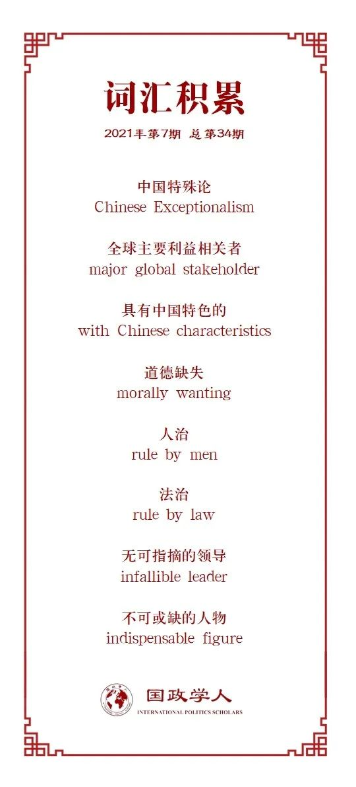

收录于合集 #理论研究 96个
作品简介
【作者】 本杰明·何，新加坡南洋理工大学拉惹勒南国际关系学院。
【编译】 程朵依（国政学人编译员，中国人民大学国际关系学院硕士研究生）
【校对】 黄慧彬
【审核】 姚寰宇
【排版】 董诗
【美编 】游钜家
【来源】 Ho, Benjamin. “Understanding Chinese Exceptionalism: China’s Rise, Its Goodness, and Greatness.” Alternatives: Global, Local, Political , vol. 39, no. 3, 2014, pp. 164–176., www.jstor.org/stable/24569474. Accessed 9 July 2021.
【归档】 《国际关系前沿》2021年第7期，总第34期。
期刊简介
《其他选择：全球，本地，政治》（ Alternatives: Global, Local, Political ）创刊于1974年，探讨了在日益全球化的条件下，新形式的政治实践和身份认同的可能性。具体而言，本刊关注的是当地政治实践和身份与新兴形式的全球经济、文化和政策之间不断变化的关系。2020年该期刊的影响因子为1.095。
理解中国特殊论：
**中国的崛起、善良和伟大 ******
Understanding Chinese Exceptionalism: China’s Rise, Its Goodness, and Greatness
本杰明·何
内容提要
近来，作为中国政治思想的分支， 中国特殊论（原文使用“中国特殊论”一词） 成为学术界热议的话题。它通过强调中国的独特之处，试图摆脱更普遍的美国及西方自由主义传统的支配，以一种全新的视角应对全球治理的挑战。本文认为，中国人自己所理解的“特殊论”是一种试图引领政治和社会导向的民族主义话语体系，它试图解释现在的中国意味着什么。中国特殊论通过强调中国的“善良”（good）和“伟大”（great），试图为中国走向世界提供吸引力与合法性。
文章导读
01
导论
中国积极参与国际事务，是20世纪末21世纪初全球政治的主要特征之一。但中国日益增长的影响力也备受外界质疑。随着国家利益与国际社会的利益日益交织，中国显然已经从被动走向主动。近年来，中国政府一再重申其在各种议题上的权利，不论是在南中国海、台湾和钓鱼岛的领土主张，还是与美国寻求更大程度的平等诉求。此外，从最近的三次全球盛会——2008年北京奥运会、2009年中华人民共和国成立60周年庆典、2010年上海世博会——可以看出，中国显然渴望向国际社会展示自己的能力，并决心成为全球主要利益相关者（major global stakeholder）。正如著名中国学者阎学通在2001年所说，中国历史上作为大国的一面曾让中国人为自己的国家感到自豪，同时，这也使他们为中国目前的国际地位感到非常悲哀，他们认为中国的“衰落”是一个必须加以纠正的历史性错误。
在这种背景下，本文认为中国表现出一种特殊主义（a spirit of exceptionalism）的精神，这决定了中国是如何看待自己、他人以及自己在世界上的地位的。作为中国政治思想的分支， 中国特殊论 成为学术界热议的话题。它通过强调中国的独特之处，把中国的伦理体系描绘成解决当前国际体系问题的办法，并试图为应对全球治理的挑战提供一种不同的视角，一种不受美国和西方自由主义传统支配的全新视角。
中国决策者经常提到“有中国特色”（with Chinese characteristics）一词，以区别中国和西方的决策。这种说法隐含着这样一种观点，即中国的全球政治范式代表了一种独特的、可能更完善的、替代目前实践的模式。然而，中国人的世界观和政策规定究竟有多独特、多激进却备受争议。只关注权力动态的学者，往往很难调和或理解其他可能影响一个国家国际行为的非物质的、观念上的因素；而只关注一个国家的文化和社会思想的人，也可能同样没有认识到国际体系所带来的结构性制约，以及权力转移的进行过程。
因此，本文试图在更广义的社会和结构因素内定位中国的国际行为，无论是观念的或物质的因素，并研究这些因素是如何影响中国对自身国际地位的认知的。鉴于中国日益增长的国际影响力，中国公民具有深深的民族自豪感，同时也对国家（和政府）在富民方面做得不够感到惋惜和批评。自毛主席宣布“中国人民已经站起来了”以来，中国的许多对外行为已经习惯于表明它已经成熟，它的命运将由中国人民自己决定。中国由此希望以自己的条件而不是现有国际社会的条件来定位自己的全球地位。
有鉴于此，中国特殊论代表了一种民族主义的话语，它试图引领政治和社会导向，同时暗示了一种信念，即中国在各国中是独特的，甚至是更为突出的。那么，是什么使中国独特？中国官方常提及的说法是，中国是爱好和平、永不称霸的国家。但这并没有使中国变得独特，毕竟很少有国家会声称他们不爱好和平。一个国家要想脱颖而出，需要包括两个特质：一是伟大（great），二是善良（good）。
02
特殊论是一个国家美德的核心理念 （Exceptionalism as a Central ldea of a Country’s Goodness）
作为一个以和平崛起而自豪的国家，爱好和平、永不称霸的特质，赋予中国“善”（being good）这一优良的道德品质。中国哲学家康晓光在讨论中国特殊论的文章中表示，中国特殊论并非来自西方，而是很大程度上来源于自身一系列独特的经验，包括如何维持一个强大的政府、“摸着石头过河”、双轨改革、以及经济开放等。这些经验并不涉及西方文化的规范（开放民主、自由选举），而是建立在诸如和平共处五项原则、毛主席反对帝国主义的思想或是邓小平反对霸权主义的理论的基础上。一项关于中国民族话语的研究指出，早在上世纪80年代和90年代，中国外交政策声明中就充满了道德色彩，其中不乏对道德合理化的推广和拔高。许多到访中国的外国代表发现，中国人经常谈论道德（ethics）、原则（principles）和中国哲学（Chinese philosophy），并且似乎认为在讨论国家利益之前，应先讨论这些伦理和原则。
这些信念与道德缺失（morally wanting）的西方原则相比，代表着一种内在“善”的品质。因此，不足为奇，中国对西方（尤其是美国）的批评往往是针对其在国际事务各领域中道德正义感的缺乏而进行的，从经济战争到反恐战争，甚至到爱德华·斯诺登等人披露的反人权活动。
因此，中国共产党精英们经常认为美国价值观的输出与中国自身的文化和民族特征不相容，尤其是那些涉及民主和人权的价值观。吉尔伯特·罗兹曼（Gilbert Rozman）认为，在中国看来，美国仍然妄想在一个不公正的全球体系上保持霸权，“即使美国与其他西方国家一起变老变病，而发展中国家日益繁荣昌盛，它却仍继续保持冷战思维定势。”
在中国文化中，人们期望为政者是讲道德的君子，一个领导人（在私人生活中）的道德水平与他（在公共生活中）领导权的正当性和权威性是直接关联的。而在西方社会，只要私人生活不干涉公共生活，政客们往往有很大的空间来区分二者。卢西恩·佩（Lucian Pye）在一项关于中国政治文化的研究中指出，当儒家的人治（rule by men）而非法治（rule by law）传统与马克思列宁主义中关于党的重要性的学说（doctrine of the preciousness of the Party）结合在一起……便产生了对无可指摘的领导（infallible leader）、不可或缺的人物（indispensable figure）这一概念的高度赞扬。在中国的政治文化中，合法性是建立在道德优越性（moral superiority）的基础上的。这种对道德善（goodness）的追求生动地体现在共产党内部对腐败的零容忍上。
此外，中国仁爱的品格也反映在其对外政策中，例如“和平崛起” (一些中国学者更喜欢称之为“和平发展”)，永不称霸。然而，中国永不称霸并不意味着中国不会占据主导地位；中国的行动在很大程度上是反应性的，取决于其他国家如何选择先采取行动。正如中国人民解放军国防大学朱成虎所说，美国如果把中国当作敌人，中国绝对会采取措施，成为合格的敌人；如果把中国当作朋友，中国将是一个非常忠实的朋友；如果把中国作为伙伴，中国也将是一个十分乐于合作的伙伴。
道德之所以受到赞扬，不是因为它固有的本体论性质（即这是正确的），而是因为它的关系意义（这是我得到别人认可的原因）。中国社会赋予了领导人一种将权威与抚民、德治相结合的领导风格。因此，领导人被期望严守道德行为标准，尤其是在私人生活中。
中国对和平崛起的强调也凸显了一种相当以自身为中心的理念（理想），即如果各国采纳中国在国际关系方面的建议，该地区将是和平的。中国国防部长在2011年香格里拉对话会上发表讲话，提出了以下原则：
（1）各国应照顾彼此的核心利益和重大关切
（2）各国应充分了解彼此的战略意图
（3）各国不应参与任何针对任何第三方的联盟
（4）中国欢迎各国为亚太地区的安全作出贡献
他还概述了中国的国际规划：
（1） 走和平发展道路
（2） 坚持防御性的防御政策
（3） 实行睦邻友好政策
（4） 致力于通过安全合作实现地区和平与稳定
（5） 致力于通过安全合作履行其国际义务
这种说法并非中国独有，但应该被认为是大多数公正国家都赞同的。中国人的不同之处在于，他们在谈判中经常利用这些原则，发挥优势，使得自己在道德上优于对手。
03
中国特殊论——一个动态而非静态的概念
如上所述，中国特殊论强调中国作为一个国家的伟大和善良，在中国决策者选择如何与外部世界建构互动关系时具有巨大的吸引力。正如王缉思所说，尽管这项大战略仍有待商榷，但中国人民对西方列强建立的国际秩序规则是不满意的。
事实上，中国过去三十年取得的经济成功，提高了中国模式取代西方现代化模式的可能性。赵穗生解释说，这种可能性是不确定的，原因有很多方面。中国模式缺乏道德吸引力，因为它完全以实用主义为指导，所以它的行为既不受价值观的约束，也不受既定原则的约束，且时间很短，不具普适性。
此外，在“天下”观的指导下，中国人对世界秩序的看法，尚未在混乱的国际政治舞台上受到足够的压力考验，它只代表了一种乌托邦式的理想，可能最终创造一种新的霸权秩序，而不是为世界提供一种全球后霸权的选择。
尽管如此，中国特殊论仍然是一部正在进行的作品，最终的图景还远未完成。但清楚的是，中国将要求在国际谈判桌上拥有更大的发言权，而不是简单地默默接受。中国将承担更大的全球责任，也将在国际事务中承担更大的风险。
一些呼声更高、要求更高的国内听众必然会期望中国领导人有更大的代表性，最终可能会使中国外交政策转向更平民化的方向，这与中国声称要批评的西方国家并无不同。上世纪90年代的中国民族话语中常暗指从历史中汲取经验、使中国变得富强的强国梦。这对中国外交政策，特别是有关中国的全球秩序规划意味着什么，将在未来几年受到密切关注。正如秦亚青所指，“当中国的核心国家利益受到威胁时，中国会更加主动果断，但只要不涉及这些利益，中国将尽可能保持低调。”这说明中国目前仍在观望，尤其是日美两国的行动。
据新加坡开国元老李光耀说，“中国希望成为自己并且被接受，而不是成为西方的荣誉成员（honorary member of the West），中国人将希望与美国在这个世纪平起平坐。”因此，21世纪中国特殊论很可能在全球范围内经历进一步的修正。这将不可避免地对中国提出更高的要求，如确保言行一致。虽然中国人民已经站起来并在国际舞台上发出了自己的声音，但中国未来会走向何方、如何走，仍然是只有他们才能回答的问题。
译者评述
近几十年来中国超常和超速的发展，引起了国际关系学界对于“中国特殊论”的讨论，不过迄今尚未有专著论述。中国例外论在不同的历史时期有不同的表现。中华帝国具有一种以华夏中心论、仁厚和平论及等级包容论为特征的对外关系普世论。毛泽东时期的中国具有以革命中心论、大国使命论及中国道德论为特征的国际关系例外论，而改革开放以来的中国则具有以新型大国论、仁厚和平论及和谐包容论为特征的新的国际关系例外论。美国例外论成功解释了美国式的道路，与美国例外论相比，中国例外论的明显特色是对干涉主义的拒绝，对仁厚包容的中和主义的追求。中国例外论可被视为关于中国外交的一种规范性理论，一种需要与当代中国外交其他五大思潮相竞争的理论与政策思想。[1]
参考文献
[1]张锋.“中国例外论”刍议[J].世界经济与政治,2012(03):82-104+158-159.
词汇整理

文章观点不代表本平台观点，本平台评译分享的文章均出于专业学习之用, 不以任何盈利为目的，内容主要呈现对原文的介绍，原文内容请通过各高校购买的数据库自行下载。
好好学习，天天“在看”
国政学人
支持学术公益与知识传播
微信扫一扫赞赏作者 __赞赏
已喜欢，对作者说句悄悄话
取消 __
发送给作者
发送
最多40字，当前共字
上一页 1/3 下一页
长按二维码向我转账
支持学术公益与知识传播
受苹果公司新规定影响，微信 iOS 版的赞赏功能被关闭，可通过二维码转账支持公众号。